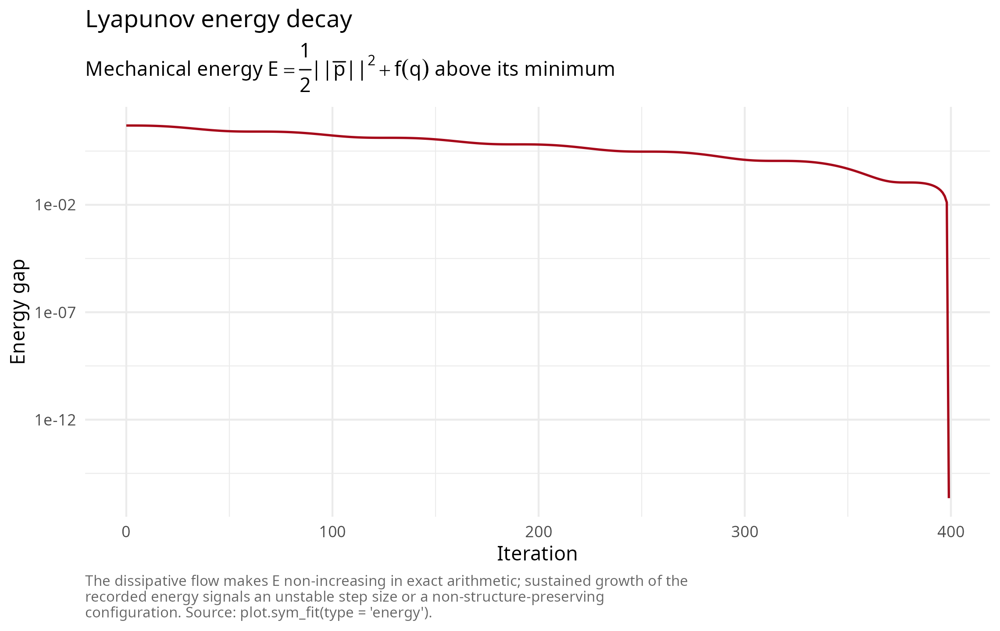
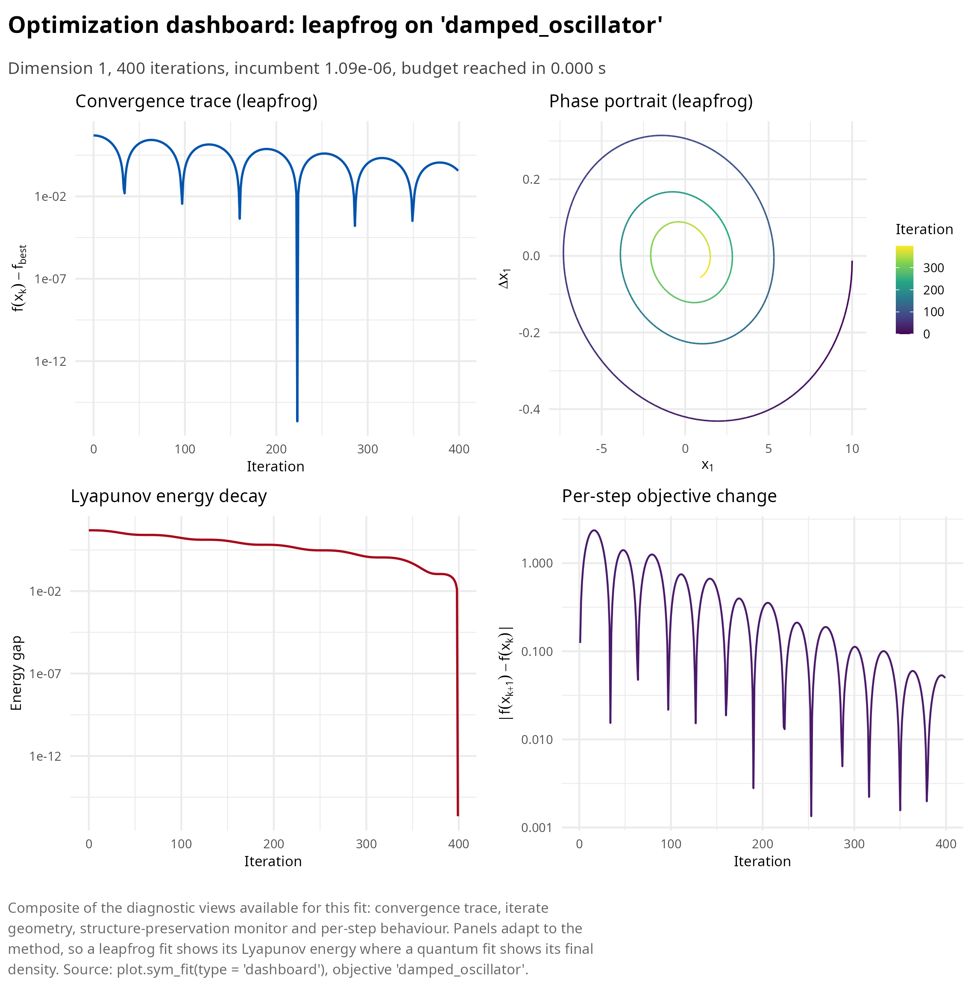

Conformal symplectic and relativistic optimization
Pablo Almaraz, RElab
Source:vignettes/articles/conformal-symplectic.Rmd
conformal-symplectic.RmdThis article develops family A of symplectoR: optimizers that integrate an autonomous Hamiltonian system with explicit friction, the conformal symplectic setting of Franca, Sulam, Robinson and Vidal [1] and the dissipative rate-matching theory of Franca, Jordan and Vidal [2].
Momentum methods are integrators in disguise
Consider the conformal Hamiltonian system on phase space \((x, p)\),
\[\dot x = \nabla_p H(x, p), \qquad \dot p = -\nabla_x H(x, p) - \gamma p, \qquad H(x, p) = \frac{\|p\|^2}{2 m} + f(x),\]
with damping constant \(\gamma > 0\). Along solutions \(\dot H = -\gamma \|p\|^2 / m \le 0\), so the objective-plus-kinetic energy is a Lyapunov function and every orbit relaxes onto critical points of \(f\). The flow contracts the symplectic form exactly, \(\omega_t = e^{-\gamma t} \omega_0\); a discretization is called conformal symplectic when it reproduces this contraction rate exactly at every step.
The central classification result is that the classical momentum method (Polyak’s heavy ball) is precisely the conformal symplectic Euler discretization of this system, with the identification \(\mu = e^{-\gamma h}\) and \(\varepsilon = h^2 / m\); Nesterov’s accelerated gradient is an integrator of the same system of the same first order, but it is not conformal symplectic: it contracts the symplectic form by the extra Hessian-dependent factor \(I - (h^2 / m) \nabla^2 f + O(h^3)\). That spurious anisotropic contraction slightly improves the contraction rate and simultaneously erodes the stability margin, which is why Nesterov’s method tolerates smaller step sizes than structure-preserving alternatives of identical cost.
Relativistic gradient descent
Replacing the kinetic energy by its special-relativistic form \(c \sqrt{\|p\|^2 + m^2 c^2}\) normalizes the velocity: \(\|\dot x\| < c\) regardless of how large the momentum grows, a gradient-clipping mechanism derived rather than bolted on. The resulting relativistic gradient descent kernel, in the package’s parameterization \((\varepsilon, \mu, \delta, \alpha)\), performs per iteration
\[x_{k+1/2} = x_k + \frac{\sqrt{\mu}\, v_k}{\sqrt{\mu \delta \|v_k\|^2 + 1}}, \quad v_{k+1/2} = \sqrt{\mu}\, v_k - \varepsilon \nabla f(x_{k+1/2}), \quad x_{k+1} = \alpha x_{k+1/2} + (1 - \alpha) x_k + \frac{v_{k+1/2}}{\sqrt{\delta \|v_{k+1/2}\|^2 + 1}}, \quad v_{k+1} = \sqrt{\mu}\, v_{k+1/2},\]
one gradient per iteration. Setting \(\delta = 0, \alpha = 0\) recovers Nesterov exactly; \(\delta = 0, \alpha = 1\) the second-order-accurate heavy ball; \(\alpha = 1\) with any \(\delta\) is conformal symplectic and is the recommended default. Each position half-kick is bounded by \(1 / \sqrt{\delta}\), so the per-iteration displacement never exceeds \(2 / \sqrt{\delta}\); the saturation fraction of this trust region is reported in the fit diagnostics.
library(symplectoR)
bm <- sym_benchmark("rosenbrock", d = 10)
fit <- sym_optim(sym_objective(bm), x0 = rep(-2, 10), method = "rgd",
control = sym_control("rgd", eps = 0.01, mu = 0.9, delta = 25, max_iter = 2000))
summary(fit)
#> ¡ symplectoR fit (rgd)
#> ⚙ Objective: rosenbrock (dimension 10)
#> ⚠ Best value: 6.49353 after 2000 iterations
#> ⚠ Status: Iteration budget reached
#> ¡ Evaluations: 2001 objective, 2000 gradient
#> ⏱ Wall time: 0.011 s
#>
#> Incumbent coordinates:
#> ✔ x[1] = 0.963839
#> ✔ x[2] = 0.893264
#> ✔ x[3] = 0.723182
#> ✔ x[4] = 0.454022
#> ✔ x[5] = 0.195886
#> ✔ x[6] = 0.0886004
#> ✔ x[7] = -0.0273712
#> ✔ x[8] = -0.0103166
#> ¡ (and 2 more)
#> ⚠ Final gradient norm: 52
#> ¡ Objective drop over the last 10 recorded iterates: 2.12
#> ⚙ Trust-region bound 1/sqrt(delta) = 0.2, saturated on 9.3% of stepsThe package’s regression tests verify the exact-equivalence claims
numerically: the relativistic kernel with \(\delta = 0\) reproduces hand-coded Nesterov
and heavy-ball iterations to below 1e-13 over 100
iterations, and the classical-momentum branch is bit-exact.
Dissipative presymplectic leapfrog
For explicitly time-dependent Hamiltonians \(H = e^{-\eta_1(t)} T + e^{\eta_2(t)} f\) the rate-matching theorem of [2] states that any presymplectic integrator of order \(r\), obtained by applying a symplectic integrator on the time-augmented phase space and updating \(t\) with the same rule as the positions, reproduces the continuous convergence rate up to an error \(O(h^r e^{-\eta_2})\). The package implements the numerically stabilized leapfrog of their Eq. (C.10): with the rescaled momentum \(\bar p = e^{-\eta} p\) only finite differences of \(\eta\) enter the exponentials, so the growing factors \(e^{\eta(t)}\) never overflow, and with \(\eta_1 = \eta_2\) the rescaled momentum is the mechanical momentum, making \(E = \tfrac12 \|\bar p\|^2 + f(q)\) the recorded Lyapunov energy.
Three damping schedules are available: "constant" (\(\eta = \gamma t\), heavy-ball-like, the
safe choice), "nesterov" (\(\eta
= \gamma \log(1 + t)\), the fast schedule at the edge of the
rate-matching condition), and "mixed" (\(\gamma_1 \log(1 + t) + \gamma_2
t^{\delta}\), the recommended compromise of the source
paper).
bm_osc <- sym_benchmark("damped_oscillator", gamma_damp = 0.2, q0 = 10)
fit_lf <- sym_optim(sym_objective(bm_osc), x0 = 10, method = "leapfrog",
control = sym_control("leapfrog", h = 0.05, gamma = 0.2,
damping = "constant", max_iter = 400, tol_grad = 0),
keep_path = "full")
plot(fit_lf, type = "energy")
The composite view collects every diagnostic this fit carries in one figure: the convergence trace, the phase portrait of the dissipative flow, the Lyapunov energy and the per-step objective change.
plot(fit_lf, type = "dashboard")
Validation against closed forms
The damped harmonic oscillator \(\ddot q +
\gamma \dot q + q = 0\) has the exact solution \(q(t) = q_0 e^{-\gamma t / 2} (\cos(\omega t / 2) +
(\gamma / \omega) \sin(\omega t / 2))\) with \(\omega = \sqrt{4 - \gamma^2}\), and the
Nesterov-damped equation \(\ddot q +
\tfrac{\gamma}{t + 1} \dot q + q = 0\) has a closed form in
Bessel functions of order \((\gamma \pm 1) /
2\); both are shipped as benchmarks with their analytic traces.
The package tests integrate both problems at steps \(h \in \{0.1, 0.05, 0.025\}\) and observe
maximum trajectory errors falling by the factor 4.00 per halving in both
cases (for the constant schedule: 1.52e-2,
3.80e-3, 9.49e-4), the clean signature of a
second-order method; both closed forms are themselves verified against a
fourth-order Runge-Kutta reference to 1e-10 before being
trusted.
err_for_h <- function(h) {
K <- round(10 / h)
fit <- sym_optim(sym_objective(bm_osc), x0 = 10, method = "leapfrog",
control = sym_control("leapfrog", h = h, gamma = 0.2, damping = "constant",
max_iter = K, tol_grad = 0), keep_path = "full")
max(abs(fit$path[, 1] - vapply(fit$trace_iter * h, bm_osc$analytic, numeric(1))))
}
vapply(c(0.1, 0.05, 0.025), err_for_h, numeric(1))
#> [1] 0.0151985603 0.0037968728 0.0009492864What structure preservation buys, honestly
Across the source papers and the package’s own experiments the consistent finding is that symplecticity does not improve the asymptotic convergence rate; it enlarges the stable step-size region (in the quadratic-programming phase diagram of [2], leapfrog remains convergent to \(h \approx 0.88\) where Nesterov fails beyond \(h \approx 0.66\)) and preserves the phase portrait and the stability character of critical points over exponentially long horizons. Since all methods here cost one gradient per iteration, the larger admissible step converts directly into wall-clock advantage. The known weak spot is stochastic gradients: noise biases the fast symplectic trajectory before averaging can help, so mini-batch regimes are outside the design envelope of this release.
References
[1] Franca, G., Sulam, J., Robinson, D. P., & Vidal, R. (2020). Conformal symplectic and relativistic optimization. Advances in Neural Information Processing Systems, 33, 16916-16926. https://proceedings.neurips.cc/paper/2020/hash/c4b108f53550f1d5967305a9a8140ddd-Abstract.html
[2] Franca, G., Jordan, M. I., & Vidal, R. (2021). On dissipative symplectic integration with applications to gradient-based optimization. Journal of Statistical Mechanics: Theory and Experiment, 2021(4), 043402. https://doi.org/10.1088/1742-5468/abf5d4